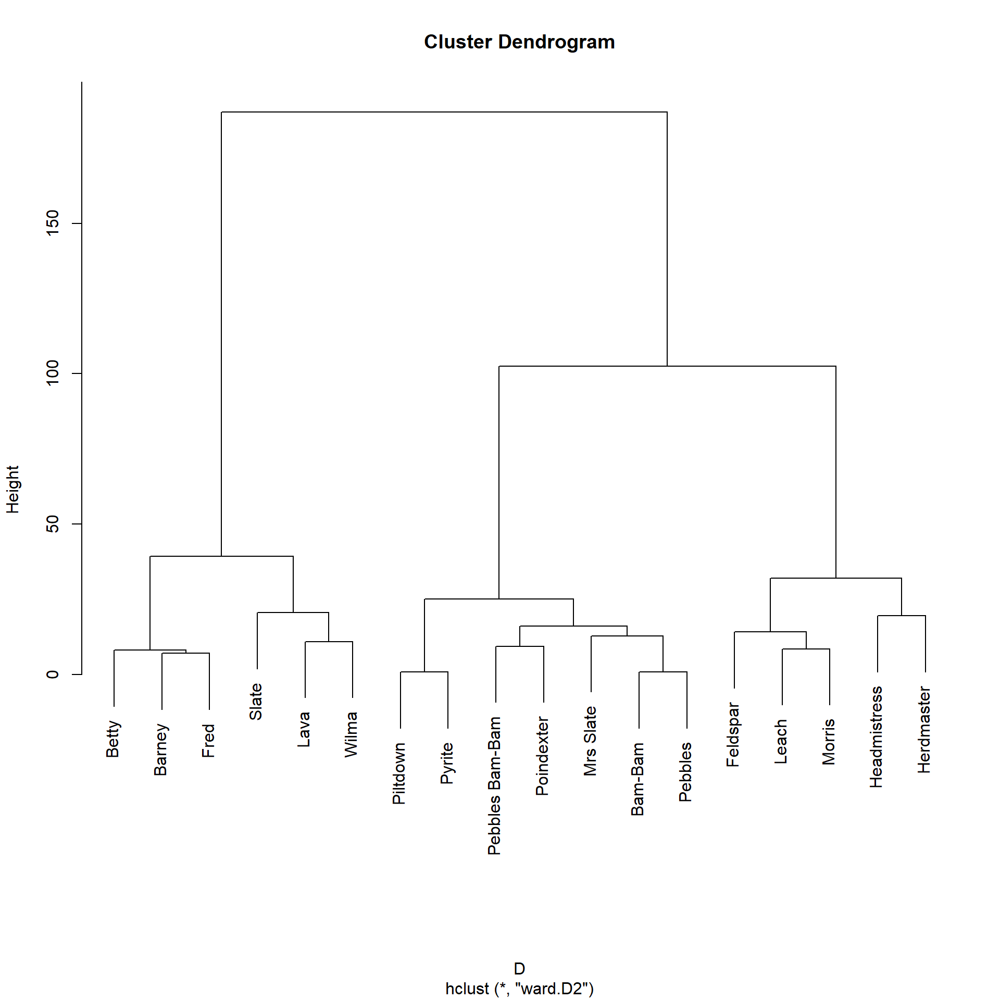
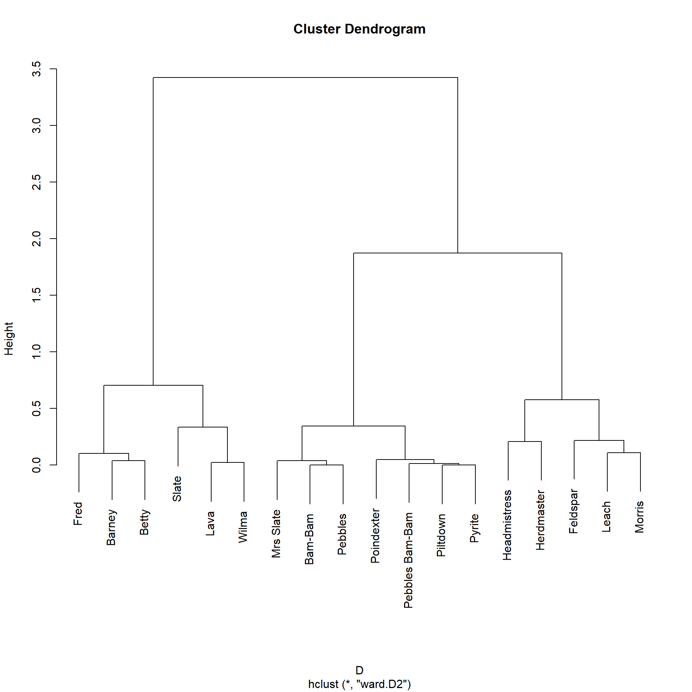
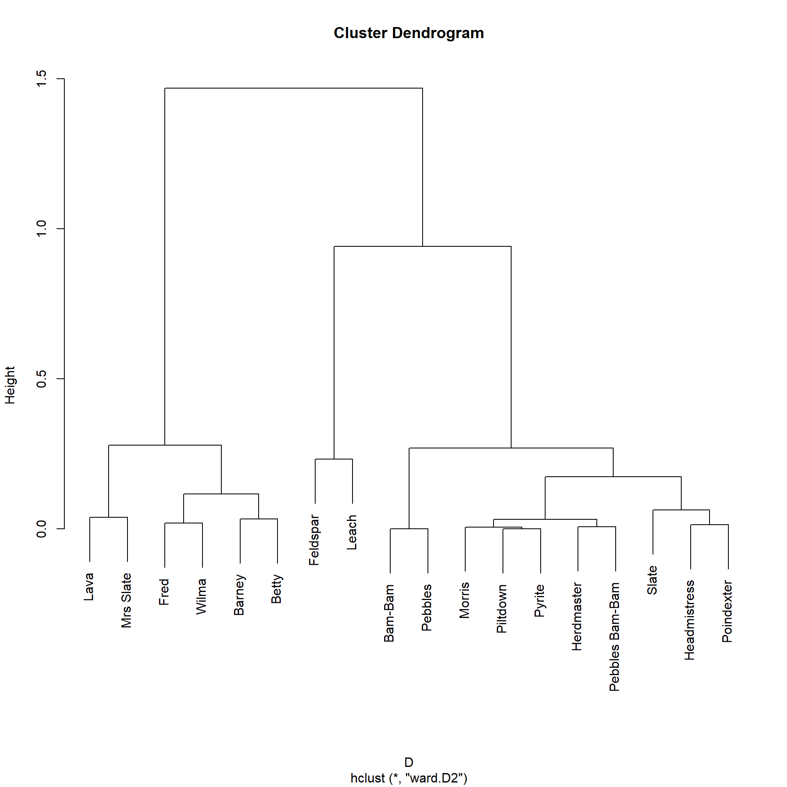

Global Vertex Similarities
1 Global Similarity Indices
As we saw in the lecture notes on local similarity metrics, the most important ingredient of structural similarity measures between pairs of nodes is the number of common of neighbors (followed by the degrees of each node), and this quantity is given by the square of the adjacency matrix \(\mathbf{A}^2\). So we can say that this matrix gives us a basic similarity measure between nodes, namely, the common neighbors similarity:
\[ \mathbf{S} = \mathbf{A}^2 \]
Another way of seeing this is that a common neighbor defines a path of length two between a pair of nodes. So the number of common neighbors between two nodes is equivalent to the number of paths of length two between them. We are thus saying that the similarity between two nodes increases as the number of paths of length two between them increases, and that info is also recorded in the \(\mathbf{A}^2\) matrix.
1.1 The Local Path Similarity Index
But if the similarity between node pairs increases in the number of paths of length two between them, wouldn’t nodes be even more similar if they also have a bunch of paths of length three between them?
Lü et al. (2009) asked themselves the same question and proposed the following as a similarity metric based on paths:
\[ \mathbf{S} = \mathbf{A}^2 + \alpha \mathbf{A}^3 \tag{1}\]
This is the so-called local path similarity index (Lü et al. 2009). Obviously, structurally equivalent nodes will be counted as similar by this metric (lots of paths of length two between them) but also nodes indirectly connected by many paths of length three, but to a lesser extent given the discount parameter \(\alpha\) (a number between zero and one).
A function that does this is:
Here’s how the local path similarity looks in the Flintstones network:
Code
library(networkdata)
library(igraph)
library(stringr) # using stringr to change names from all caps to title case
g <- movie_267
V(g)$name <- str_to_title(V(g)$name)
g <- delete_vertices(g, degree(g) <= 3) # deleting low degree vertices
A <- as.matrix(as_adjacency_matrix(g))
S <- local.path(A)
S[1:10, 1:10] Bam-Bam Barney Betty Feldspar Fred Headmistress Herdmaster Lava
Bam-Bam 20.0 29.5 30.5 6.5 31.5 12.5 9.5 25.0
Barney 29.5 50.0 51.0 13.0 52.0 21.0 21.0 46.5
Betty 30.5 51.0 52.0 11.0 53.0 24.0 18.0 46.0
Feldspar 6.5 13.0 11.0 3.0 13.5 4.5 5.0 10.0
Fred 31.5 52.0 53.0 13.5 55.0 21.5 21.5 47.5
Headmistress 12.5 21.0 24.0 4.5 21.5 13.0 6.5 21.5
Herdmaster 9.5 21.0 18.0 5.0 21.5 6.5 10.0 17.0
Lava 25.0 46.5 46.0 10.0 47.5 21.5 17.0 42.0
Leach 9.5 15.5 16.0 3.5 17.5 7.5 5.5 15.5
Morris 8.5 13.0 15.5 2.5 13.0 8.0 3.5 12.5
Leach Morris
Bam-Bam 9.5 8.5
Barney 15.5 13.0
Betty 16.0 15.5
Feldspar 3.5 2.5
Fred 17.5 13.0
Headmistress 7.5 8.0
Herdmaster 5.5 3.5
Lava 15.5 12.5
Leach 6.0 4.0
Morris 4.0 6.0Of course as \(\alpha\) approaches zero, then the local path measure reduces to the number of common neighbors, while numbers closer to one count paths of length three more.
Let us now cluster the nodes in the graph according to the local path similarity. To do that, we need to transform the similarities into proper distances that we can feed to the usual hierarchical clustering algorithm. We can do by computing \(\mathbf{D} = 1-\mathbf{S}\).1
In R we can do this as follows:

“Eyeballing” the dendrogram, it seems like there are three similarity blocks in the network. We can obtain them like this:
Bam-Bam Barney Betty Feldspar Fred
1 2 2 3 2
Headmistress Herdmaster Lava Leach Morris
3 3 2 3 3
Mrs Slate Pebbles Pebbles Bam-Bam Piltdown Poindexter
1 1 1 1 1
Pyrite Slate Wilma
1 2 2 We can see that Betty, Barney, Fred, and Wilma (along with Slate and Lava) end up in the same block.
1.2 The Katz Similarity
The local path similarity considers number of paths of lengths two and three linking two nodes in computing their similarity. Naturally, people may wonder why we can’t keep going and add paths of length four:
\[ \mathbf{S} = \mathbf{A}^2 + \alpha \mathbf{A}^3 + \alpha^2 \mathbf{A}^4 \]
Or paths of length whatever:
\[ \mathbf{S} = \mathbf{A}^2 + \alpha \mathbf{A}^3 + \alpha^2 \mathbf{A}^4 ... + \alpha^{k-2} \mathbf{A}^k \]
Where \(k\) is the length of the maximum path considered. Lü et al. (2009) argue that these higher order paths don’t matter, so maybe we don’t have to worry about them.
Another issue is that there was already an all-paths similarity measure in existence, one developed by the mathematical social scientist Leo Katz (1953) in the 1950s (!).
The basic idea was to use linear algebra tricks to solve:
\[ \mathbf{S} = \sum_{k=1}^{\infty} \alpha^k \mathbf{A}^k \]
Which would theoretically count the all the paths of all possible lengths between two nodes while discounting the contribution of the longer paths in proportion to their length (as \(k\) gets bigger, with \(\alpha\) a number between zero and one, \(\alpha^k\) gets smaller and smaller).
Linear algebra hocus-pocus (non-technical explainer here) turns the above infinite sum into the more tractable:
\[ \mathbf{S} = (\mathbf{I} - \alpha \mathbf{A})^{-1} \tag{2}\]
Where \(\mathbf{I}\) is the identity matrix (a matrix of all zeros except that it has the number one in each diagonal cell) of the same dimensions as the original. Raising the result of the subtraction in parentheses to minus one indicates the matrix inverse operation (most matrices are invertible, unless they are weird).
A function to compute the Katz similarity between all node pairs looks like:
This function takes the network’s adjacency matrix (w) as input and returns the Katz similarity matrix (S) as output.
For technical reasons (e.g., guarantee that the infinite sum converges) we need to choose \(\alpha\) to be a number larger than zero but smaller than the reciprocal of the first eigenvalue of the matrix. Here we just pick the reciprocal of the largest (first) eigenvalue minus a very small number (\(10^{-10}\)).
Line 4 computes the actual Katz similarity using the native R function solve to find the relevant matrix inverse.2
In the Flintstones network the Katz similarity looks like:
Bam-Bam Barney Betty Feldspar Fred Headmistress
Bam-Bam 43912268 75530407 76630126 17269355 78596698 34072232
Barney 75530407 129914551 131806098 29703805 135188661 58605253
Betty 76630126 131806098 133725188 30136290 137157000 59458542
Feldspar 17269355 29703805 30136290 6791511 30909683 13399569
Fred 78596698 135188661 137157000 30909683 140676885 60984437
Headmistress 34072232 58605253 59458542 13399569 60984437 26437192
Herdmaster 28235263 48565494 49272605 11104068 50537096 21908193
Lava 68595891 117986974 119704858 26976671 122776865 53224651
Leach 24107266 41465215 42068946 9480652 43148569 18705214
Morris 21013980 36144672 36670936 8264157 37612029 16305084
Herdmaster Lava Leach Morris
Bam-Bam 28235263 68595891 24107266 21013980
Barney 48565494 117986974 41465215 36144672
Betty 49272605 119704858 42068946 36670936
Feldspar 11104068 26976671 9480652 8264157
Fred 50537096 122776865 43148569 37612029
Headmistress 21908193 53224651 18705214 16305084
Herdmaster 18155067 44106651 15500794 13511834
Lava 44106651 107154482 37658255 32826196
Leach 15500794 37658255 13234577 11536403
Morris 13511834 32826196 11536403 10056129Which are pretty big numbers! Which makes sense, since these are estimates of all the paths of any length between every pair of nodes in the network. We can get more tractable figures by normalizing the matrix by its maximum:
Bam-Bam Barney Betty Feldspar Fred Headmistress Herdmaster Lava
Bam-Bam 0.31 0.54 0.54 0.12 0.56 0.24 0.20 0.49
Barney 0.54 0.92 0.94 0.21 0.96 0.42 0.35 0.84
Betty 0.54 0.94 0.95 0.21 0.97 0.42 0.35 0.85
Feldspar 0.12 0.21 0.21 0.05 0.22 0.10 0.08 0.19
Fred 0.56 0.96 0.97 0.22 1.00 0.43 0.36 0.87
Headmistress 0.24 0.42 0.42 0.10 0.43 0.19 0.16 0.38
Herdmaster 0.20 0.35 0.35 0.08 0.36 0.16 0.13 0.31
Lava 0.49 0.84 0.85 0.19 0.87 0.38 0.31 0.76
Leach 0.17 0.29 0.30 0.07 0.31 0.13 0.11 0.27
Morris 0.15 0.26 0.26 0.06 0.27 0.12 0.10 0.23
Leach Morris
Bam-Bam 0.17 0.15
Barney 0.29 0.26
Betty 0.30 0.26
Feldspar 0.07 0.06
Fred 0.31 0.27
Headmistress 0.13 0.12
Herdmaster 0.11 0.10
Lava 0.27 0.23
Leach 0.09 0.08
Morris 0.08 0.07Which looks better. As we would expect, Fred is very similar to Barney and Betty. We can then do the standard hierarchical clustering to see how this similarity measure groups nodes:

Bam-Bam Barney Betty Feldspar Fred
1 2 2 3 2
Headmistress Herdmaster Lava Leach Morris
3 3 2 3 3
Mrs Slate Pebbles Pebbles Bam-Bam Piltdown Poindexter
1 1 1 1 1
Pyrite Slate Wilma
1 2 2 The Katz similarity, like the local paths one, assigns Fred, Barney, Betty, Wilma (along with Slate and Lava) to the same group, and puts the kids in a separate block.
1.3 Degree-Weighted Katz Similarity (AKA Leicht-Holme-Newman)
Leicht et al. (2006) argue that the Katz approach is fine and dandy as a similarity measure, but note that is an unweighted index (like the raw number of common neighbors). This means that nodes with large degree will end up being “similar” to a bunch of other nodes in the graph, just because they have lots of paths of length whatever between them and those nodes.
Leicht et al. (2006) propose a “fix” for this weakness in the Katz similarity, resulting in the matrix linear algebra equivalent of a degree-normalized similarity measure like the Jaccard or Cosine.
So instead of Katz they suggest we compute:
\[ \mathbf{S} = \mathbf{D}^{-1} \left( \mathbf{I} - \alpha \mathbf{A} \right)^{-1} \mathbf{D}^{-1} \]
Where \(\mathbf{D}\) is the degree matrix containing the degrees of each node along the diagonals, meaning that \(\mathbf{D}^{-1}\) will contain the inverse of each node’s degree \(\frac{1}{k_i}\) along the diagonals.
So, the LHN Similarity is just the Katz similarity (the term in parentheses) weighted by the degree of the sender and receiver node along each path, further discounting paths featuring high-degree nodes at either or both ends.
Which leads to the function:
Code
LHN.sim <- function(w) {
I <- diag(nrow(w)) # creating identity matrix
d <- rowSums(w) # degree vector
D <- diag(d) # creating degree matrix from degree vector
alpha <- 1 / eigen(w)$values[1] - 1e-10 # reciprocal of first eigenvalue of adjacency matrix minus a tiny number
z <- solve(D) %*% solve(I - alpha * w) %*% solve(D) # LHN index
rownames(z) <- rownames(w)
colnames(z) <- colnames(w)
return(z)
}And the Flintstones result:
Bam-Bam Barney Betty Feldspar Fred
Bam-Bam 0.72 0.57 0.58 0.85 0.55
Barney 0.57 0.45 0.46 0.67 0.44
Betty 0.58 0.46 0.47 0.68 0.44
Feldspar 0.85 0.67 0.68 1.00 0.65
Fred 0.55 0.44 0.44 0.65 0.42
Headmistress 0.67 0.53 0.54 0.79 0.51
Herdmaster 0.69 0.55 0.56 0.82 0.53
Lava 0.61 0.49 0.49 0.72 0.47
Leach 0.79 0.63 0.64 0.93 0.61
Morris 0.69 0.55 0.55 0.81 0.53
Mrs Slate 0.60 0.48 0.49 0.71 0.46
Pebbles 0.72 0.57 0.58 0.85 0.55
Pebbles Bam-Bam 0.69 0.55 0.56 0.82 0.53
Piltdown 0.69 0.54 0.55 0.81 0.53
Poindexter 0.67 0.53 0.54 0.79 0.52
Pyrite 0.69 0.54 0.55 0.81 0.53
Slate 0.66 0.52 0.53 0.77 0.50
Wilma 0.56 0.44 0.45 0.66 0.43Here we can see that, compared to the number we got for the Katz similarity, Barney and Fred are actually not that similar to one another after we take into account their very high degree, and that Barney is actually most similar to Feldspar.
Let’s block the actors in this network according to the LHN similarities:

Bam-Bam Barney Betty Feldspar Fred
1 2 2 3 2
Headmistress Herdmaster Lava Leach Morris
1 1 2 3 1
Mrs Slate Pebbles Pebbles Bam-Bam Piltdown Poindexter
2 1 1 1 1
Pyrite Slate Wilma
1 1 2 It seems like this approach is geared towards finding smaller, more fine-grained clusters (e.g., Feldspar and Leach) of similar actors in the data, although it still correctly assigns Wilma, Fred, Barney, and Betty to the same cluster.
2 The Matrix Exponential Similarity
Another approach to computing global similarities between nodes, similar to the Katz similarities, is to use an operation called the matrix exponential (Fouss et al. 2016, 87).
For the adjacency matrix, the matrix exponential similarity is defined as:
\[ \mathbf{S} = \sum_{k=1}^{\infty} \frac{\alpha^k\mathbf{A}^k}{k!} \]
Where, the denominator is the factorial of the \(k^{th}\) matrix power \((k \times (k-1) \times (k-2) \ldots \times 1)\).
Recall that the powers of the adjacency matrix \(\mathbf{A}^k\) produces a matrix counting the number of walks of length \(k\) between every pair of nodes (and cycles of length \(k\) in the diagonals). So this global measure of similarity, like the Katz similarity, counts nodes as similar if they are connected by indirect paths of all lengths, discounted by their length, as given by the denominator \(k!\).
Matrix algebra magic turns the above infinite sum into the more tractable:
\[ \mathbf{S} = e^{\alpha\mathbf{A}} \]
Where \(e\) refers to the matrix exponential operation.
In R we can calculate the matrix exponential similarity using the package expm. Here’s a quick function that does that:
And now to test it out:
Bam-Bam Barney Betty Feldspar Fred Headmistress Herdmaster
Bam-Bam 25550.4 43929.1 44572.7 10044.3 45715.2 19816.1 16417.6
Barney 43929.1 75565.6 76661.1 17279.0 78632.2 34082.8 28252.7
Betty 44572.7 76661.1 77781.2 17526.6 79772.8 34585.3 28655.0
Feldspar 10044.3 17279.0 17526.6 3953.4 17980.9 7789.8 6462.2
Fred 45715.2 78632.2 79772.8 17980.9 81827.1 35463.6 29399.8
Headmistress 19816.1 34082.8 34585.3 7789.8 35463.6 15388.7 12732.9
Herdmaster 16417.6 28252.7 28655.0 6462.2 29399.8 12732.9 10572.9
Lava 39893.6 68624.8 69622.9 15690.0 71411.0 30958.1 25655.1
Leach 14022.3 24115.9 24468.0 5514.0 25097.1 10880.7 9013.7
Morris 12224.2 21019.7 21332.3 4803.7 21870.9 9491.2 7850.8
Lava Leach Morris
Bam-Bam 39893.6 14022.3 12224.2
Barney 68624.8 24115.9 21019.7
Betty 69622.9 24468.0 21332.3
Feldspar 15690.0 5514.0 4803.7
Fred 71411.0 25097.1 21870.9
Headmistress 30958.1 10880.7 9491.2
Herdmaster 25655.1 9013.7 7850.8
Lava 62327.6 21904.4 19091.1
Leach 21904.4 7701.0 6710.2
Morris 19091.1 6710.2 5857.4Note that we set the alpha parameter to \(\alpha = 1.5\). When we choose a value of \(\alpha\) closer to zero (\(\alpha \rightarrow 0\)), longer paths get discounted a lot; this means that the weight of the measure is borne by the degree of each node (direct links). As \(\alpha\) increases, we give more weight to indirect paths (Benzi and Klymko 2014).
As we can see, just like Katz and Leicht-Holme-Newman, the resulting matrix has pretty giant numbers as entries, which we would expect since we decide to put the weight on longer paths. Dividing by the maximum gives us the similarities we seek:
Bam-Bam Barney Betty Feldspar Fred Headmistress Herdmaster Lava
Bam-Bam 0.31 0.54 0.54 0.12 0.56 0.24 0.20 0.49
Barney 0.54 0.92 0.94 0.21 0.96 0.42 0.35 0.84
Betty 0.54 0.94 0.95 0.21 0.97 0.42 0.35 0.85
Feldspar 0.12 0.21 0.21 0.05 0.22 0.10 0.08 0.19
Fred 0.56 0.96 0.97 0.22 1.00 0.43 0.36 0.87
Headmistress 0.24 0.42 0.42 0.10 0.43 0.19 0.16 0.38
Herdmaster 0.20 0.35 0.35 0.08 0.36 0.16 0.13 0.31
Lava 0.49 0.84 0.85 0.19 0.87 0.38 0.31 0.76
Leach 0.17 0.29 0.30 0.07 0.31 0.13 0.11 0.27
Morris 0.15 0.26 0.26 0.06 0.27 0.12 0.10 0.23
Leach Morris
Bam-Bam 0.17 0.15
Barney 0.29 0.26
Betty 0.30 0.26
Feldspar 0.07 0.06
Fred 0.31 0.27
Headmistress 0.13 0.12
Herdmaster 0.11 0.10
Lava 0.27 0.23
Leach 0.09 0.08
Morris 0.08 0.07And the resulting clustering solution looks like:

Which is substantively identical to the three cluster solution obtained using the Katz similarity, which makes sense given the similarity (pun intended) between the two metrics.